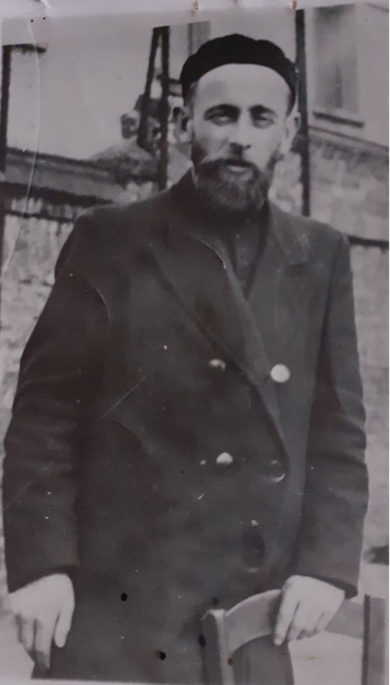
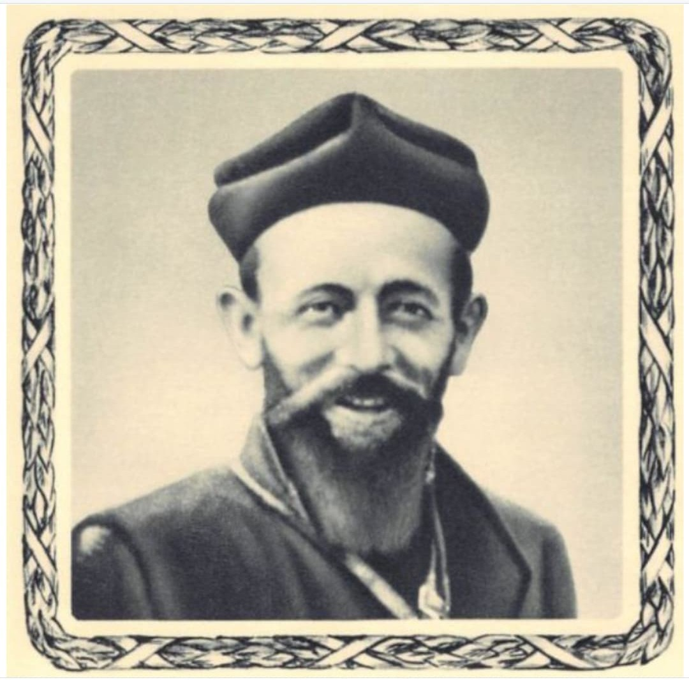
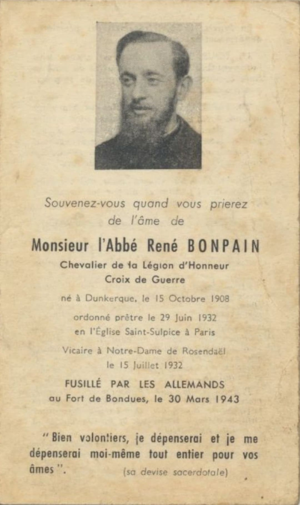
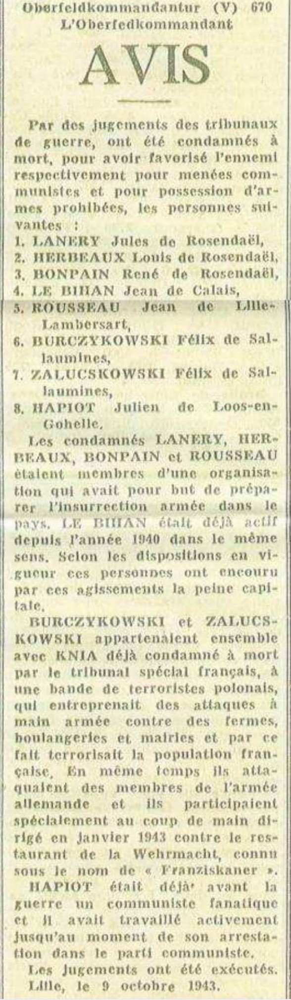
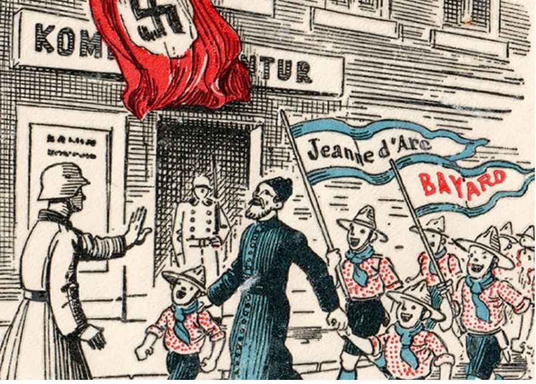

Nom : René Bonpain
Dates : 15 octobre 1908 – 30 mars 1943
Origine : Dunkerque (Nord)
Fonction : Prêtre catholique – Vicaire à Notre‑Dame de Rosendaël
L’abbé René Bonpain est l’une des figures les plus marquantes de la Résistance dans le Dunkerquois. Prêtre profondément engagé auprès des jeunes, il entre dès 1940 dans les réseaux Alliance et Zéro‑France, spécialisés dans le renseignement militaire.
Avec son frère Paul, il met en place une poste clandestine grâce à une mallette à double fond surnommée « Paulinette », dissimulée dans des convois de charbon. Il aide également de nombreux jeunes à échapper au STO en leur procurant de faux papiers ou en les exfiltrant vers la zone libre.
Recruté dans le réseau Alliance comme adjoint de Louis Herbeaux (dit Tigre), il fournit des plans côtiers, des informations sur les installations allemandes et des renseignements sur la région de Dunkerque.
Malgré le démantèlement progressif de son réseau, il refuse de fuir pour ne pas compromettre d’autres résistants. Son engagement est total, discret, mais déterminé.
Arrêté le 19 novembre 1942 à Rosendaël par la Geheimefeldpolizei, il est interné à Loos‑lès‑Lille. Le 19 mars 1943, il est condamné à mort par le tribunal militaire allemand de Lille.
L’avis officiel de l’Oberfeldkommandantur (V) 670 confirme sa condamnation aux côtés de Lanery, Herbeaux et Rousseau, et se conclut par la mention : « Les jugements ont été exécutés ».
René Bonpain est fusillé par les Allemands au Fort de Bondues le 30 mars 1943. Sa tombe est retrouvée en 1944 parmi celles des 68 fusillés du fort.
Après la Libération, sa mémoire est honorée à Rosendaël, Bondues et Grande‑Synthe : bustes, écoles, timbre commémoratif.
À Bondues, la place entre la mairie et l’église devient officiellement Place de l’Abbé Bonpain par arrêté préfectoral du 20 septembre 1946.




⬅ Retour aux visages